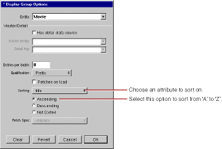

You can change your application to sort movies alphabetically without writing any code. Display groups manage sorting behavior, and WebObjects Builder provides a Display Group Options panel for configuring this and other characteristics of display groups.
Double-click the movieDisplayGroup variable in the object browser.
The Display Group Options panel opens for configuring movieDisplayGroup.

Select the title attribute in the Sorting pop-up list.
Select Ascending.
Click OK.
WebObjects Builder stores your settings in an archive that specifies how to create and configure movieDisplayGroup at runtime. The archive is stored inside your Main component in a file named Main.woo. You can't see the file from Project Builder because you're not meant to edit it directly, but WebObjects Builder's object browser shows you which of your component's variables are initialized from the archive (or woo file) so you don't have to view its contents directly.